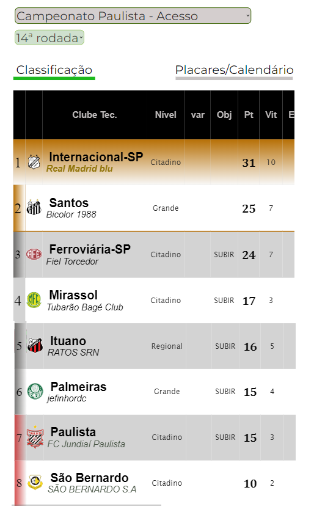

Campeonato de Cartola
A vitória no cartola é o sucesso do seu time!

Redação Cartola - 22/10/2024 - 11h35min
Precisando de um vitória, Palmeiras do "Alemão Colorado 75" logrou triunfo diante do Vasco do 'SELEBEST FC', vice-líder do Nacional ao fechar 94,73pts contra os 89,36pts do Vasco da Gama. Com o gigante da colina jogando pela vantagem do empate, podemos dizer que os comandados do SEBEST FC foram eliminados por falta de 0,64pts!
Rebaixando no paulistão de 2023, Palmeiras iniciou a atual temporada apostando na contratação do "Ferro nos Morangos FC", dono de diversos títulos estaduais, visando retornar à divisão de elite do paulista, porém, longe disso, clube terminou o acesso na sexta colocação, com o treinador demitido na rodada de número 12.
Com a chegada do Alemão Colorado 75 (Campeão Nacional de 2022), na rodada 17, após boa campanha com o Botafogo, verdão passou a ter campanha consistente, saltando da 14ª posição na rodada 12 até chegar a ser o terceiro lugar, ao final da rodada 26. Atualmente, clube ocupa a quinta colocação, um ponto a menos que o terceiro colocado, Chapecoense, com 46.
Tendo o privilégio de iniciar a Copa do Brasil na quinta-fase, (classificado à Copa Sulamericana), Palmeiras não teve vida fácil: dos quatro empates, três deles foram decididos pelo critério de "maior" clube, a exceção na semifinal contra o Vasco, justamente contra o único advesário que possúia a vantagem dos empates.
Do lado corintiano, o ano de 2024 tinha tudo para não ser promissor. Sendo um dos únicos clubes grandes (ao lado do Atlético-MG) a não ter conseguido classificação tanto para a Libertadores quanto para Sulamericana, alvi-negro ficou com apenas 3 campeonatos a disputar: Paulistão, que terminou campeão ao levantar o título com o tec. "TimãoJP10"; depois, o campeonato nacional, que se encontra na 9º colocação e, por último, a Copa do Brasil, em que se classificou para final ao derrotar o Flamengo do "Catheringer F.C" na segunda partida por 4x3, depois de empatar o primeiro jogo em 0x0. Se a caminhada do Palmeiras foi difícil, o que diremos da corintiana: tendo iniciado desde a primeira fase e sempre sob o comando do "Flunáticos Club", timão precisou superar nada menos que oito adversários:
De longe o maior técnico de todos os tempos (confira o ranking geral de técnicos aqui), treinador corintiano chega para a terceira final de Copa do Brasil em busca do tricampeonato desta modalidade.
Ao ténico campeão, será conferido 150pts no ranking geral e 420 reais de premiação, com o vice faturando 200 reais. quanto ao clube, será a primeira agremiação classificada para a Copa Libertadores de 2025, além do ingresso na Copa do Brasil a partir das oitavas-de-finais.